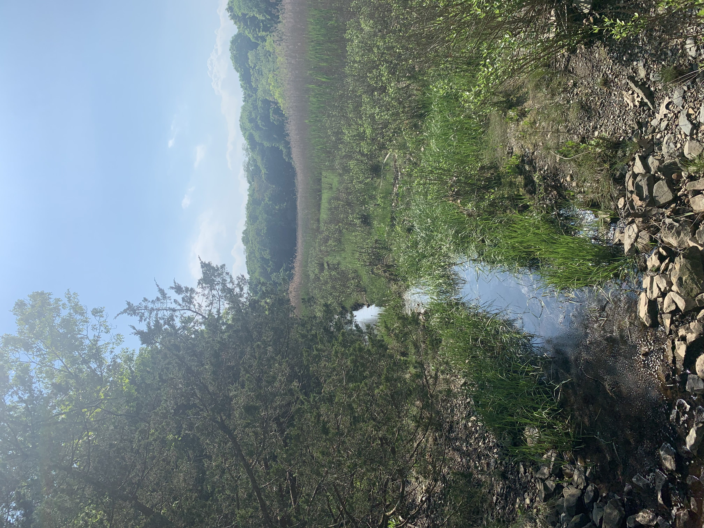
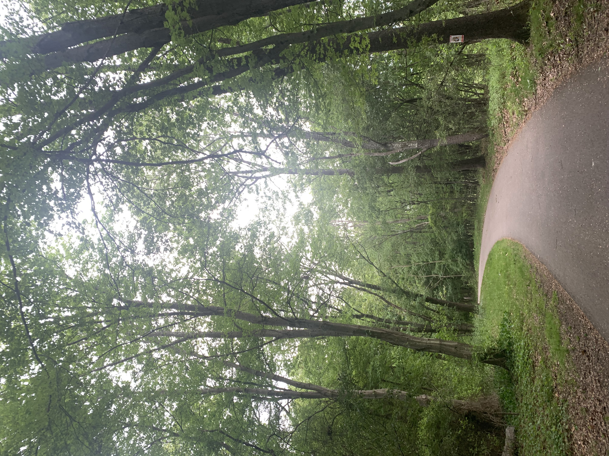

⠀⣠⡶⠚⠉⠙⠶⣶⣤⣄⡀⠀⠀⠀⠀⠀⠀⠀⠀⠀⠀⠀⠀⠀⠀⠀⠀⠀⠀⠀⠀⠀⠀⠀⠀⠀⠀⠀⠀⠀⠀⠀⠀⠀⠀⠀⠀⠀⠀⠀⠀⠀
⠀⠀⠀⠀⠀⠀⠀⠀⠀⠀⠀⠀⣠⡴⠖⢾⣶⣦⣄⡙⠀⠀⠀⠀⠀⠀⠹⡿⣿⣦⡀⠀⠀⠀⠀⠀𓂃 𓈒⠀⠀⠀⠀⠀⠀⠀⠀⠀⠀⠀⠀⣠⡶⠚⠉⠙⠶⣶⣤⣄⡀⠀⠀
⠀⠀⠀⠀⠀⠀⠀⠀⠀⠀⠀⡞⠁⠀⢀⣠⣤⣿⣿⢿⣢⣄⠀⠀⠈⠙⢳⣽⣿⣿⣷⡀⠀⠀⠀⠀⠀⠀⠀⠀𓆝⠀𓆝 𓆟⠀⠀⠀⠀⠀⠀⠀⣠⡶⠚⠉⠙⠶⣶⣤⣄⡀⣠⣤⠀
⠀⠀⠀⠀⠀⠀⠀𓂃 𓈒𓏸⠀⠀⠀⢛⣇⣰⣿⣿⣻⣿⣿⣿⣯⣿⣷⣄⠀⠀⠰⣿⣿⣿⣿⣷⣦⣄⠀⠀⠀⠀⠀⠀𓆝 𓆟 𓆞 𓆝⠀⠀⠀⠀⠀⠀⡛⣻⣿⣿⣷⡦⣄⠀⣷⣦⣄⠀
⠀⠀⠀⠀⠀⠀⡀⠀⠀⠀⣸⣿⢿⣿⣿⣿⣿⣿⡿⣻⢿⣿⣿⣿⣷⣦⣤⣽⣿⡿⠛⡛⣻⣿⣿⣷⡦⣄⠀ 𓆞 𓆝⠀⠀⠀𓆝 𓆟⠀⠀⠀⠀ ⣷⡦⣄⠀𓂃 𓈒⠀⠙⠶⣶⣤⣄⡀
⠀⠀⠀⠀⠀⠈⠉⠓⠒⠋⠉⣚⢸⢸⣯⣯⠏⢻⢁⣯⠀⠀⣬⣿⣿⣿⣯⣿⣿⣿⣶⣺⣿⣿⣿⣿⣟⣿⠆⠀⠀⠀⠀⠀⣠⡶⠚⠉⠙⠶⣶⣤⣄⡀⠀⠀⠀⠀⠀⠀ ⠉⠙⠶⣶⣤⣄⠉⠙⠶⣶⣤⣄.
⠀
⠉⠙⠶⣶⣤⣄⡀⠀⣠⡴⠖⢾⣶⣦⣄⡙⠀⠀⠀⠀⠹⡿⣿⣦⡀⠀⠀⠀𓂃 𓈒⠀⠀⠀𓆝⠀𓆝 𓆟⠀⠀⠀⣠⡶⠚⠉⠙⠶⣶⣤⣄⡀⠀⣠⡴⠖⢾⣶⣦⣄⡙⠀⠹⡿⣿⣦⡀ ⠀⠀𓂃 𓈒


June 2026
Joined UMB Develops
March 2026
Started working part-time at Target as a Starbucks barista ‧𓍢ִ໋𖠚 ׂ 𓈒 ⋆ ۪
July 2025
Worked at Dunkin' as a Sales Associate ‧𓍢ִ໋𖠚 ׂ 𓈒 ⋆ ۪
June 2023
Began Technology Apprenticeship at Digital Ready
May 2023
Graduated Boston Latin Academy
June 2022
Worked at Greater Horizon Healthcare as an assistant
⠀
⠉⠙⠶⣶⣤⣄⡀⠀⣠⡴⠖⢾⣶⣦⣄⡙⠀⠀⠀⠀⠹⡿⣿⣦⡀⠀⠀⠀𓂃 𓈒⠀⠀⠀𓆝⠀𓆝 𓆟⠀⠀⠀⣠⡶⠚⠉⠙⠶⣶⣤⣄⡀⠀⣠⡴⠖⢾⣶⣦⣄⡙⠀⠹⡿⣿⣦⡀ ⠀⠀𓂃 𓈒
⠀
⠉⠙⠶⣶⣤⣄⡀⠀⣠⡴⠖⢾⣶⣦⣄⡙⠀⠀⠀⠀⠹⡿⣿⣦⡀⠀⠀⠀𓂃 𓈒⠀⠀⠀𓆝⠀𓆝 𓆟⠀⠀⠀⣠⡶⠚⠉⠙⠶⣶⣤⣄⡀⠀⣠⡴⠖⢾⣶⣦⣄⡙⠀⠹⡿⣿⣦⡀ ⠀⠀𓂃 𓈒